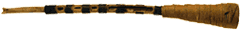

Jaleika (Жалейка, другое название - брёлка):
 Широко распространенный в России и Белорусии духовой тростевой инструмент. Звук отчетливый и достаточно резкий. Состоит из короткой трубки с 3-7 боковыми отверстиями c одинарной тростью и широкого раструба из коровьего рога или бересты.Жалейка выступает равно как сольный и ансамблевый инструмент, для двухголосной игры часто применяют парные жалейки - обычно с 3 и 5 отверстиями. |